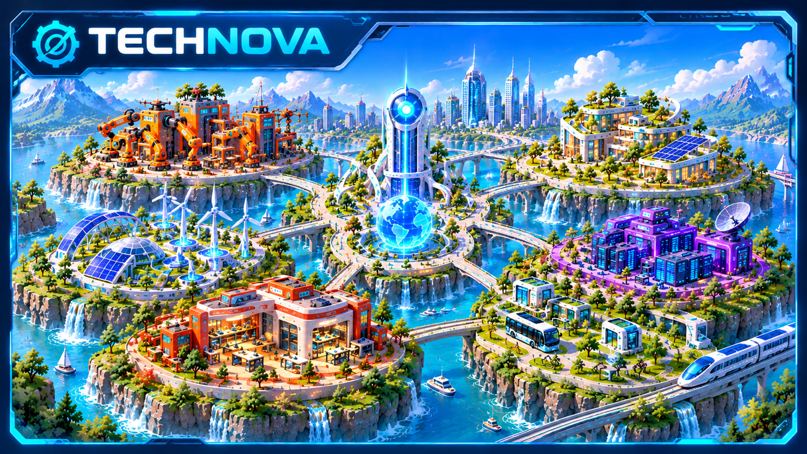

🤖 SOS Robot !
Le robot de livraison ne détecte plus les obstacles. Enquête, modifie son programme et vérifie ton résultat.

Explore la cité, découvre les objets techniques et relève des défis pour devenir inventeur.
Une première aventure interactive est disponible dans la V1.
Le robot de livraison ne détecte plus les obstacles. Enquête, modifie son programme et vérifie ton résultat.
Les pièces gagnées pendant tes missions apparaissent ici.
Aucune mission terminée pour le moment.
Indicateurs d'entraînement, et non certification des acquis.